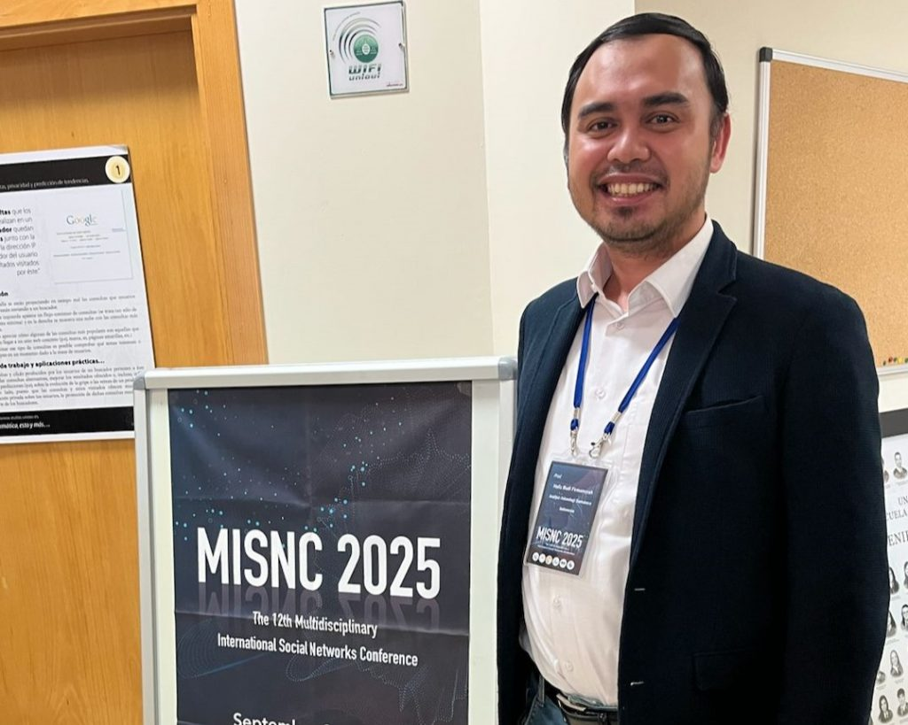
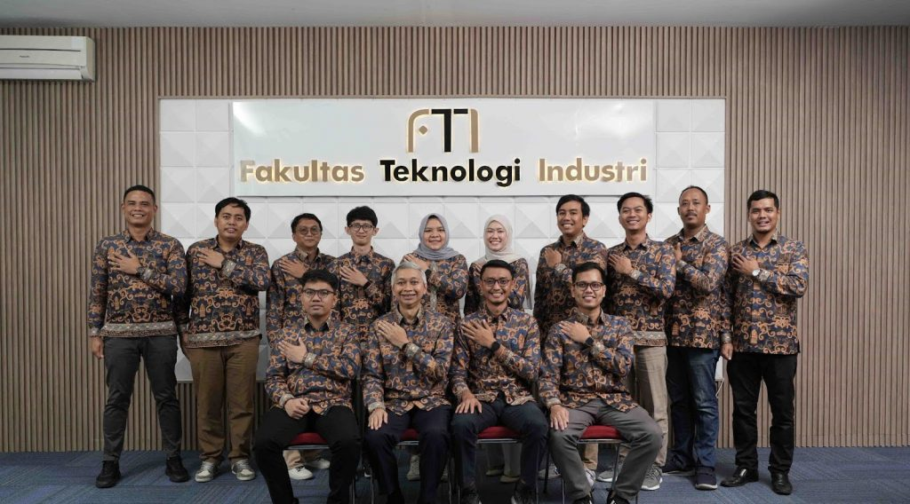
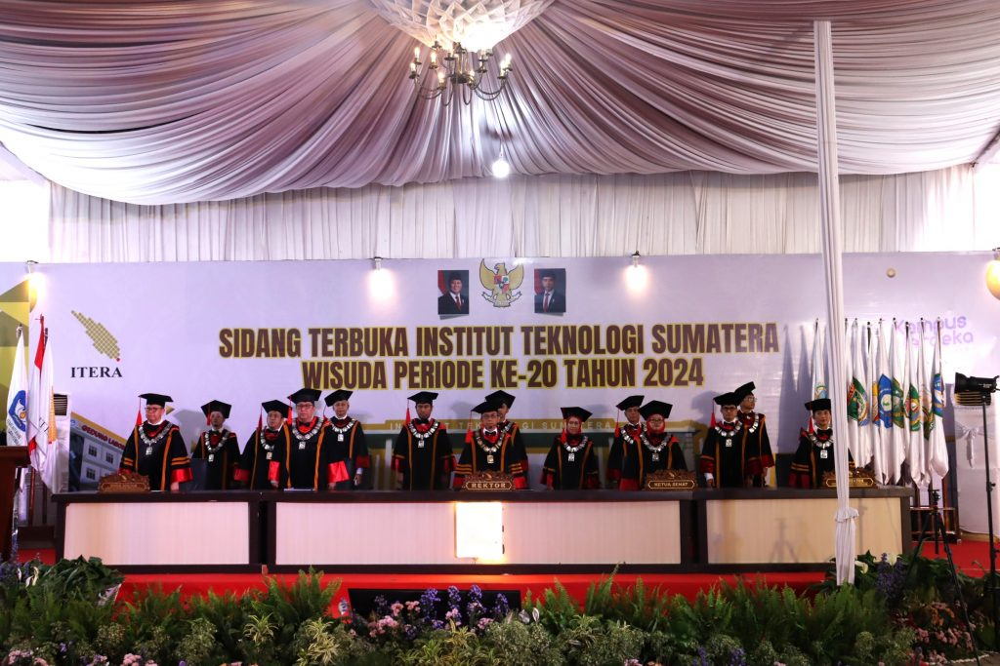

|

Salah satu dosen dari Program Studi Teknik Informatika Institut Teknologi Sumatera (ITERA), Hafiz Budi Firmansyah, Ph.D., berhasil mengharumkan nama almamater di kancah internasional. Beliau terpilih menjadi salah satu pemakalah yang mewakili Indonesia dalam ajang bergengsi, Multidisciplinary International Social Networks Conference (MISNC) 2025, yang diselenggarakan di Spanyol.
|

Lampung Selatan, 20 Desember 2024 – Program Studi Teknik Informatika Institut Teknologi Sumatera (ITERA) mencatatkan pencapaian membanggakan dengan memperoleh akreditasi “Baik Sekali” dari Lembaga Akreditasi Mandiri Informatika dan Komputer (LAM INFOKOM). Akreditasi ini berlaku hingga 11 Desember 2029, menandai langkah besar dalam upaya peningkatan mutu pendidikan di lingkungan ITERA.
|

Lampung Selatan – Institut Teknologi Sumatera (ITERA) kembali menggelar acara wisuda ke-20 yang berlangsung pada Sabtu, 9 November 2024. Acara yang penuh haru dan kebanggaan ini dihadiri oleh para wisudawan beserta keluarga, dosen, dan jajaran rektorat. Sebanyak 58 mahasiswa dari Program Studi Teknik Informatika resmi diwisuda, menandai pencapaian akademis mereka setelah menempuh proses pembelajaran yang intensif.
|